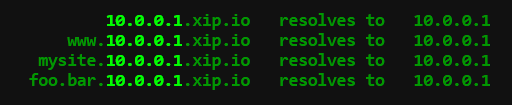
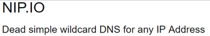

Visit GCP's Compute Engine and start configuring an instance with the following:
us-west1-bzone- Ubuntu 22.04 LTS
- HTTP and HTTPS traffic enabled
Create the instance. When it comes up, note its External IP address. You will be using this address in subsequent steps.
Note that the instance may also be launched from Cloud Shell via the gcloud SDK using the command, which will output the External IP address upon completion
gcloud compute instances create nginx-gb \ --image-family=ubuntu-2204-lts \ --image-project=ubuntu-os-cloud \ --zone=us-west1-b \ --machine-type=e2-micro \ --tags=http-server,https-server
Our guestbook web site requires a name so we don't have to remember the external IP address to access it. To do so, visit a free DNS registration service and register a name on the VM's external IP address.
Example services include
Note that if you get a rate-limit error on Let's Encrypt via one service, you will need to use the alternate ones. This is a result of Let's Encrypt being abused by malicious actors to create web sites with valid certificates that look legitimate. (This, of course, won't be an issue with our janky web application)
duckDNS

freeDNS
ipq.co
noip.com
(Note: omit the dash since it is not allowed).
xip.io
Some services allow you to specify a name that includes an IP address that it resolves to. If you have difficulty with the sites above, then use names from the following xip-based sites.


nip.io


sslip.io

We will now set up our guestbook web site on the Compute Engine VM and use the name from the prior step to obtain a TLS certificate.
If you are using a Compute Engine VM, ssh into it from the Web UI
or from Cloud Shell via
gcloud compute ssh nginx-gb
Once connected to the VM, clone the repository and change into the source directory
git clone https://github.com/bfritscher/guestbook-src.git cd guestbook-src/03_nginx_gunicorn_certbot
We will now examine the code and configuration of our application.
etc/systemd.template
The repository contains template files for configuring the server and nginx to run the Guestbook code. These templates will generate corresponding files in /etc, the directory where Linux configuration files are stored. The first template is etc/systemd.template. systemd is the default service manager for Ubuntu. The file configures the startup of the gunicorn daemon and its environment. In addition, the working directory is set to PROJECT_DIR, which will be replaced on installation with your directory. The PATH environment variable is set to the location where the Python environment's binaries will eventually be installed via a subsequent venv. The last command configures the entry point for the Python application, sets the number of processes to use for it, and specifies the domain socket that will be used by the nginx web server to communicate with the web application.
The other template is etc/nginx.template which configures nginx with the server's DNS name (setup from the prior step) and the path to the root directory for the server. It also specifies that requests to the top-level path (/) should go through the gunicorn socket and be handled by the Python application while requests to the /static path should be served directly by nginx from the specified directory.

install.sh
The script used to setup the site is install.sh
The script takes two parameters: the DNS name you set-up earlier and your email (e.g. ./install.sh cs430-wuchang.ipq.co name@school.com)
The script begins by pulling out the first part of the DNS name (e.g. cs430-wuchang) and eliminating the first period and all subsequent characters. The name is used to label the systemd service for the site.
Then, the script installs python3, venv, nginx, and certbot. It then creates the venv environment for the web application and installs its packages into it from requirements.txt.
Then, the script sets up a systemd startup file for the web site from its template using sed to replace the PROJECT_DIR with the current working directory ($PWD) and PROJECT_USER with the current user ($SUDO_USER). It will then name the systemd service using the $SITE label above.
The script then sets up the nginx configuration file from its template using sed. Similar substitutions are made as well as a substitution for PROJECT_HOST using the fully-qualified domain name (FQDN) of the site (registered earlier). It also sets up nginx to add the site (via adding config file to /etc/nginx/sites-available and a link in /etc/nginx/sites-enabled to it)
It then starts systemd service for the site, enables it by default (on startup), and restarts nginx for changes to take hold.
Finally, the script calls certbot to obtain the TLS certificate in non-interactive mode (see TLS slides on Let's Encrypt)
Run the script. The script will configure your VM and obtain a certificate for your site. Fill in
sudo ./install.sh <YourDNSNameHere> <YourEmail@domain.com>
Bring the site up in a browser and note it's valid certificate. Add an entry to the guestbook.
- Take a screenshot of the site along with its Let's Encrypt certificate and include it in your lab notebook
Go to the web console of Compute Engine, find the VM in "VM instances" and select Delete. When prompted, confirm that you would like to delete the VM.
This can also be done via Cloud Shell via:
gcloud compute instances delete nginx-gb --zone=us-west1-b